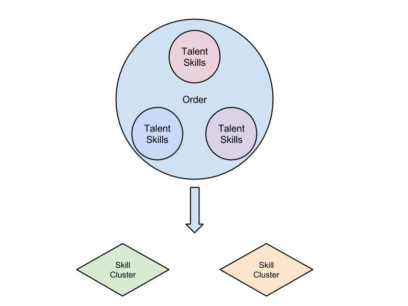

I can turn your data into actionable insights. Whether you're trying to maximize profit or add cutting edge quantitative methods into your research, I can help.
Data Science Consulting
A complete solution for your business: I work with leadership to identify goals, develop technical solutions, and take measurable actions to activate your data.
Technology Consulting
Building technology? I can help you determine the appropriate languages, databases, and cloud resources that will get you on the right track from day one.
Example Projects
A few examples of my work.
Skill Clusters
Discovering emerging skill-sets in the gig economy.
I enjoy helping people understand what cutting edge machine learning and technology can do for them. When you hire me as a contractor or consultant you're not just hiring a pair of extra hands, you're hiring a strategic thinker who's looking out for your interests. I work under an agile methodology which means transparent planning, communication, and timelines are my status quo.
Discovering emerging skill-sets in the gig economy.
Goals
Aquent is a temporary staffing company that finds people contractual work in creative roles such as Graphic Design, Copy Editing, Illustrating, etc. Aquent acts as a freelancer's agent, connecting qualified people with meaningful work. Many people spend large portions of their careers with Aquent as they enjoy the variety of projects and companies that comes with freelancing without having to worry about finding the work themselves.
Aquent makes money off every order (contractual position) they staff and thus has a vested interest in staffing as many orders as the sales team secures. Finding the right talent (temporary worker) for an order can be tricky and depends on location, culture, experience, and other qualifications.
At the core of a talent's qualifications is her skill set. Aquent realized this and created a free online training program called Gymnasium to help talent (or anyone) build their skills sets for free. Identifying emerging skill sets allows Aquent to tailor today's courses relevant to tomorrow's orders. Thus there are two primary goals:
Discover what skill sets are emerging in new orders.
Determine if the talent base has these skill sets and if not, ramp up recruiting and training efforts in these areas.
Solution
When Aquent begins the process of filling and order, various talent become associated with it and reach different levels of candidacy. If a talent is interviewed for the position, it is very likely they have the core skill set necessary for the job. The skill set of each talent (derived from their profile) who interviewed for an order are grouped together and the clustering algorithm Latent Dirichlet Allocation (LDA) is used to discover latent clusters of skills (which we will simply call skill sets).

The skill sets provide a clear view of what skills occur together on orders. The following are two examples of actual skill sets found in this work:
Skill Set 1
Skill Set 2
html
graphic_design
css
illustrator
javascript
adobe_creative_suite
php
indesign
web_design
photoshop
...
...
Skill set 1 is a web designer and skill set 2 is a more traditional graphic designer.
Action
Using the skill sets discovered it is now possible to:
Discover emerging skill sets in new orders.
Quantify exactly how often these skill sets are in demand.
Determine how much of the talent base has these skill sets.
Ramp up recruiting and training efforts as necessary.
Arctic Browning
After years of increased vegetative growth, why are we observing death?
The 2015 Arctic Report Card [1] showed an unusual downward trend in the Normalized Vegetation Index (NDVI) in the arctic circle and the northern reaches of Eurasia. NDVI is a measure of the earth's greenness, acting as a proxy for vegetative growth and primary productively. The cause of the recent browning trend is not known, although isolated field studies suggest extreme temperature and other events have had a significant impact [2]. This is in contrast to the previous 30 years where an upward trend in vegetative growth and greenness has been observed. The plot below shows the aggregate trends over the Arctic, North America, and Eurasia.
On the left is the Max NDVI where the value represented is the maximum of the season. On the right is the Time Integrated NDVI (TI-NDVI) where the value represented is the sum of the NDVI over the growing season. TI-NDVI is a better indicator of overall vegetative growth as it takes the entire season into account and not just the maximum values.
Methods
Data for the Arctic Circle is difficult to come by. However NASA launched two satellites (Aqua and Terra) around the turn of the century that provide daily coverage of the entire earth. From these satellites we can derive NDVI, Land Surface Temperature (LST), and Snow Cover. We will use LST and Snow Cover to predict TI-NDVI. We hope to find connections between the LST and Snow cover and the amount of vegetation growth (TI-NDVI) that was observed.
Example: When temperature rises in mid winter, the snow melts and expose delicate shrubs. If the temperature then drops, the shrubs that were previously protected by the snow now die due due to exposure. When summer comes the dead shrubs fail to produce new leaves, which lowers the value of TI-NDVI. Because temperature had to rise and then fall for this event to occur, we call it "nonlinear".
We hypothesize that the relationship between LST, Snow Cover, and TI-NDVI is nonlinear (as illustrated in the example). Although there are many methods in machine learning that can capture nonlinear relationships, we will use Symbolic Regression, an evolutionary algorithm. Symbolic Regression is particularly good at finding nonlinear interactions between variables, in our case LST and snow cover. In addition the results are delivered as a mathematical equation which climate scientists can easily interpret. This is in contrast to other nonlinear machine learning methods such as Neural Networks which although excellent at building nonlinear models, can be difficult to interpret.
Results
This research is currently in progress.
Literature Cited
Greenness 15. Arctic Program Available at: http://arctic.noaa.gov/Report-Card/Report-Card-2015/ArtMID/5037/ArticleID/221/Tundra-Greenness. (Accessed: 25th January 2017)
Bjerke, J. W. et al. Record-low primary productivity and high plant damage in the Nordic Arctic Region in 2012 caused by multiple weather events and pest outbreaks. Environ. Res. Lett. 9, 84006 (2014).
Crop Yield Prediction
Understanding the risk of growing corn, soybeans, and wheat around the world.
Business Goals
Weather Predict Consulting was interested in providing global crop yield forecasting and related risk analysis products. These products needed to update in near real-time. The goal was to create a reliable system that could make as accurate crop yield predictions as possible.
Solution
I created a full-stack system to ingest crop yield and satellite data, perform data validation and error checking, and automate the modeling process. The system automated data ingestion, modeling, and reporting. I researched additionally statistical methods and data sources to enhance the accuracy and robustness of the models. Although the details of this work are proprietary, some of the challenges I faced and overcame include:
Bad quality and missing crop yield data in many regions.